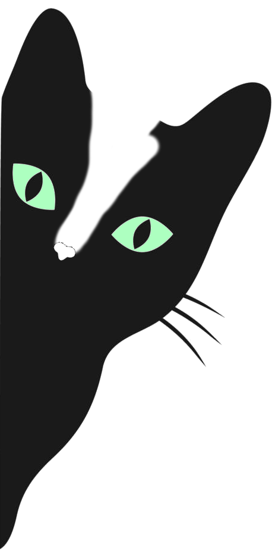

¡Hola! Soy Melani Lechman
Te vengo a contar un poquito sobre mí.. ✨

Soy Desarrolladora Frontend graduada en Desarrollo de Software, con formación técnica en Informática Personal y Profesional. Me especializo en la construcción de interfaces web responsivas, accesibles y centradas en la experiencia del usuario. Me motiva crear soluciones digitales que combinen claridad visual, usabilidad y estructura de código limpia. Trabajo principalmente con HTML, CSS y JavaScript (ES6+), aplicando buenas prácticas de desarrollo y diseño responsive. Además de desarrollar, disfruto compartir conocimientos: brindé clases particulares de programación en C++, donde fortalecí habilidades de comunicación técnica, resolución de problemas y acompañamiento en procesos de aprendizaje. Actualmente busco oportunidades para crecer profesionalmente en entornos colaborativos, aportando compromiso, autonomía y mentalidad de mejora continua.
Hasta hace poco, brindé clases particulares de programación en C++, una experiencia que me permitió descubrir cuánto me gusta enseñar y acompañar a otros en su proceso de aprendizaje.
Proyectos
Proyecto de tesis | Instituto Tecnológico ITEC
Desarrollo de un sistema administrativo orientado a optimizar la gestión académica de la Escuela Gregoria Matorras N°644.
Características principales:
Gestión de alumnos, materias, docentes y calificaciones
Interfaces responsivas desarrolladas con HTML, CSS y JavaScript
Arquitectura modular utilizando Electron
Validación de datos y organización estructurada de información
Objetivo: mejorar la eficiencia operativa y facilitar el acceso a la información para el equipo directivo.
Ver repositorio
Tecnologías
- ↪HTML
- ↪CSS
- ↪JavaScript
- ↪Git
- ↪Electron
Contacto
Estoy abierta a oportunidades laborales remotas o híbridas en desarrollo frontend.
Si querés conocer más sobre mi trabajo o colaborar en un proyecto, podés contactarme a través de: